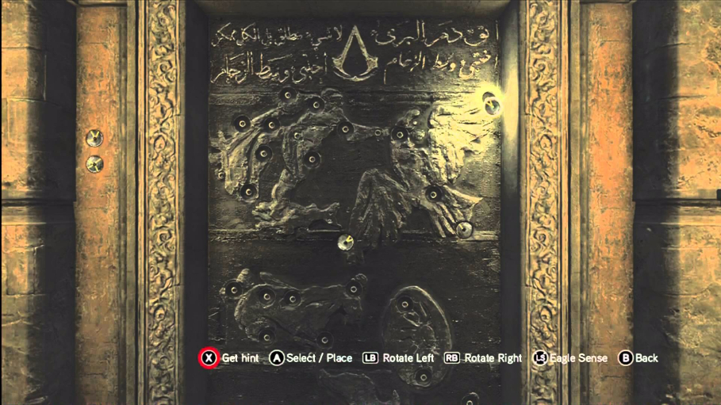

Your misionYou are tasked with killing Laureano Torres. Once you've done that you will be 1 of us. After you've accepted this mission and walk through that door, there is no going back. Its do or die trying.bbbbb If you want to turn back, do it now. Proceed with care.
You are weak. You disgust me.You go home and later die of aids. Great job moron.
Which way do you go?
A guard, Take him out.
YOU DIED. YOU SUCK. REFRESH TO RESTART NOOB.A huge rock fell on your face squashing you like a bug.
YOU DIED. YOU SUCK. REFRESH TO RESTART NOOB.He spotted you so He shot you first.(REFERENCE TIME)
The mansion.You wait for night to fall. You know what to do. Kill him.
Exploring.You explore the mansion and stumble upon a crystal skull.
Sneaking back. You decide to continue but stumble upon a large group of guards. You are captured, questioned, tortured and executed. Way to go Moron
The End. You are mesmerized by the clarity of the skull and enter a trance like state. When you snap out of it, it's already becoming morning. You failed your mission but while sailing back you start to realize how valuable the skull actually is. The sudden realisation of your new found riches brings a smile to your face.
The final door. Shit, the door is locked. You gotta do something fast!

Key found.You found the key on his desk in his study, Lets go back.
The End. Your mission is over. You are now a member of the Assassins. You've done it.
YOU DIED. YOU SUCK. REFRESH TO RESTART NOOB.You bust down the door but break your shoulder while doing it. He sees you and stabs you before you get up. Moron.